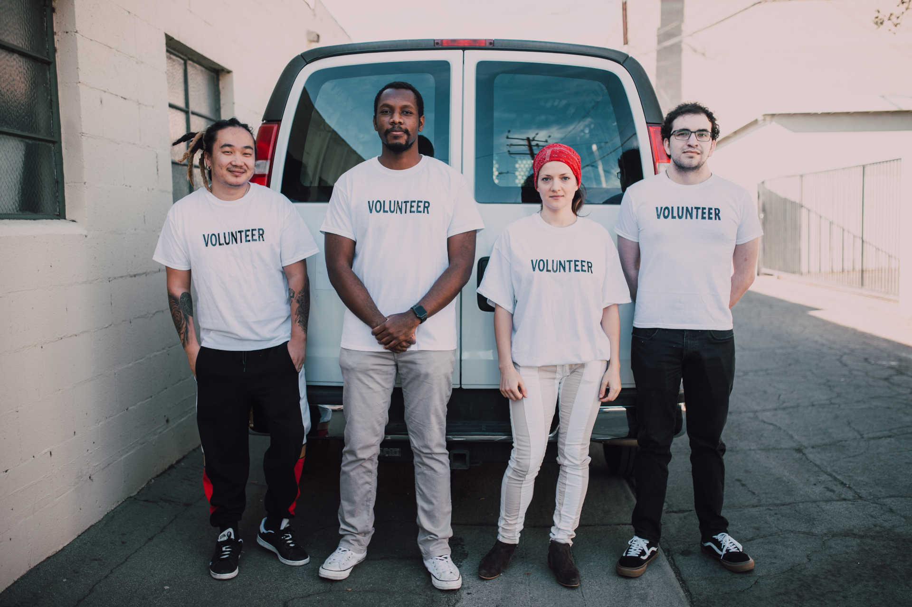

Nossos parceiros
Nossos parceiros e voluntários levaram água potável para pessoas em comunidades necessitadas e em situações de emergência em todo o mundo.
Parceiros
Empresas e organizações que estão com a gente
- A Child’s Hope International
- Ação contra a fome
- Advogados de lavagem
- Africare
- Agência dos EUA para o Desenvolvimento Internacional
- Aliança de Alívio Batey
- Alimentar as crianças
- Alive Medical Services
- American Chemical Society
- AmeriCares
- AMPATH
- Aquaya
- Bethel Network
- Caminho unido
- Catholic Relief Services
- Centros de Controle e Prevenção de Doenças
- ChildFund International
- ChildFund International
- Clinton Global Initiative
- Comitê Internacional de Resgate
- Conselho de Missões Médicas Católicas
- Conselho Internacional de Enfermeiros
- Corpo Médico Internacional
- CUIDADO
- Departamento do Reino Unido para o Desenvolvimento Internacional
- ESPERANÇA
- Federação Internacional das Sociedades da Cruz Vermelha e do Crescente Vermelho
- FHI 360
- Fibria
- Food for the Hungry
- Fundação Aga Khan
- Fundação Amazonas Sustentável (FAS)
- FXB International
- Global Water Challenge
- GlobalMedic
- H20 para a vida
- Inundação instantânea para o bem
- Irmãs de Notre Dame de Namur
- Mantenha uma criança viva
- Mateus 25 Ministérios
- Millennium Water Alliance
- MSH
- Organização Mundial da Saúde (OMS)
- Oxfam Internacional
- Parceiros em Saúde
- Parceria da água dos EUA
- Plano
- Projeto Água Saudável e AIDS
- PSI
- Rotary International - WASRAG
- Salve as crianças
- Samaritan’s Purse
- SEGURO. Quênia
- Sociedade de Saúde da Família
- SOTENI
- Un Kilo Ayanda
- UNC - Chapel Hill Water Institute
- UNICEF
- Universidade Johns Hopkins
- Visão Mundial
Junte-se a nós
Faça parte do nosso time e ajude a levar água potável para milhões de pessoas ao redor do mundo.
